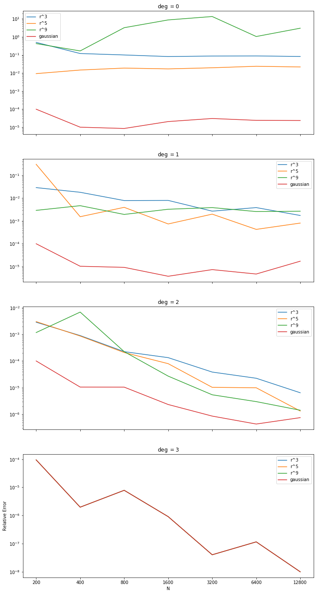

This experiment will set up code to quickly test many variations of RBF-FD on $\SS^2$. We will test many aspects of RBF-FD in this circumstance including how the number of polynomial/spherical harmonic terms affect stability and convergence rates for PHS RBFs and infinitely-differentiable RBFs.
- first header
- References
Augmenting With Spherical Harmonics
Using the method illustrated in the RBF-FD page, we use the spherical harmonics as a basis terms to approximate the steady state solution to $$\Delta_\SS u = -f(u)$$ where $f(u) = Y_{2,2}$. The graphs below show the relative $L_2$ error as $N$ increases using $\phi(r) = r^3$ and stencil sizes of $31$ and $101$ respectively. It compares the accuracy of augmenting with different numbers of spherical harmonic basis terms. In the legend the convention $\text{deg}=-1$ is used to denote that no basis terms were used.

The following graphs compare the RBFs $r^3, r^5, r^9$ and the gaussian in a similar experiment. For each RBF, increasing the number of basis terms increases the order of convergence. For a given degree the differences between RBFS aren't so clear. Since PHS RBFS are generally poor when using only up to linear terms in the basis, we look to degree $2$ and above for a pattern. For degree $2$ it seems that if $N$ is sufficiently large the accuracy increases by a constant factor as the power of the RBF increases. However when using up to degree $3$ basis terms the RBF seems to make no difference (including using the gaussian). This suggests that the issue is in the use of $Y_{2,2}$ as the forcing term. To test this we will use a higher dimensional spherical harmonic as the forcing function.
The next graphs test using the forcing term $Y_{4,-3}$. For these trials the stencil size was chosen to be twice as large as the number of terms in the basis (minimum 11). As hoped, we now see improving orders of convergence for degree 4, and now when using degree 5 basis terms the choice of RBF is irrelevant.
References